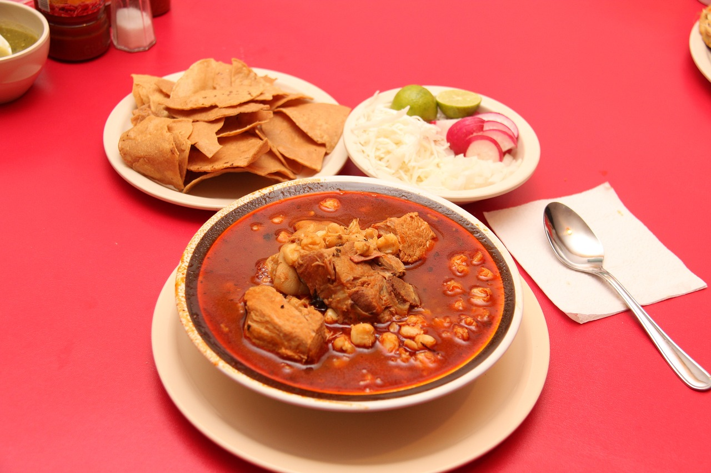
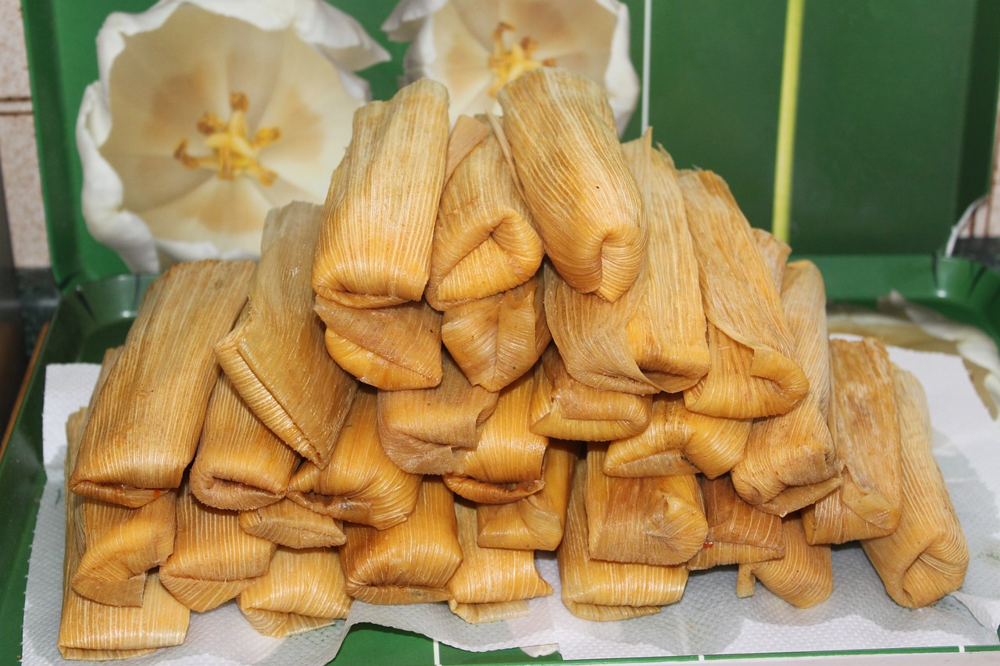

HABLEMOS UN POCO DE MÉXICO
México es un país ubicado en América del Norte, conocido por su rica historia, diversidad cultural y tradiciones vibrantes. Su cultura está profundamente influenciada por las civilizaciones prehispánicas como los aztecas, mayas y olmecas, así como por la colonización española. Esto ha dado lugar a un mestizaje único que se refleja en su arquitectura, música, festividades y, sobre todo, en su gastronomía.
GASTRONOMÍA TRADICIONAL MEXICANA
La comida mexicana es famosa en todo el mundo por su variedad de sabores, colores y texturas. En 2010, fue reconocida como Patrimonio Cultural Inmaterial de la Humanidad por la UNESCO. Algunos de los platillos más representativos incluyen:
| Foto | Nombre | Descripción |
|---|---|---|
 |
Tacos | Tortillas de maíz o harina rellenas de carne, pollo, pescado o vegetales, acompañadas de salsas, cilantro, cebolla y limón |
 |
Mole | Una salsa compleja hecha con chiles, especias, chocolate y otros ingredientes, comúnmente servida sobre pollo o pavo. |
|  | Pozole | Sopa de maíz cacahuazintle con carne de cerdo o pollo, aderezada con lechuga, rábanos, limón y orégano. |
|  | Tamales | Masa de maíz rellena de carne, vegetales o dulce, envuelta en hojas de maíz o plátano y cocida al vapor. |
| Chiles en nogada | Chiles poblanos rellenos de carne y frutas, bañados con una crema de nuez y granada, representando los colores de la bandera mexicana. | |
| Cochinita pibil | Platillo de la península de Yucatán, elaborado con cerdo marinado en achiote y cocido en horno subterráneo. |
Además, los ingredientes básicos como el maíz, los chiles y el frijol son esenciales y están presentes en casi todos los platillos.
BEBIDAS TRADICIONALES
México también es conocido por sus bebidas típicas, como el tequila, el mezcal, el atole, el champurrado y el agua de horchata. La cocina mexicana no solo deleita el paladar, sino que también es una expresión de identidad y herencia cultural. ¿Te gustaría explorar más sobre algún platillo o región específica?


REFERENCIAS
- UNESCO: La gastronomía mexicana fue declarada Patrimonio Cultural Inmaterial de la Humanidad en 2010, resaltando su importancia como expresión cultural. Fuente: UNESCO - Gastronomía mexicana
- Historia de la gastronomía mexicana: Varios autores y estudios destacan la influencia de las culturas prehispánicas y españolas en la cocina de México: Fuente: Pilcher, Jeffrey M. Que vivan los tamales! Food and the Making of Mexican Identity. University of New Mexico Press, 1998.
- Platillos típicos: La información sobre los tacos, mole, pozole, tamales y otros proviene de fuentes culinarias reconocidas y tradiciones documentadas: Fuente: Santamaría, María. Diccionario enciclopédico de la gastronomía mexicana. Editorial Larousse, 2011.
- Ingredientes básicos: El maíz, chile y frijol son pilares fundamentales de la dieta mexicana desde épocas prehispánicas: Fuente: Long, Janet. El maíz en el México antiguo. UNAM, Instituto de Investigaciones Antropológicas.